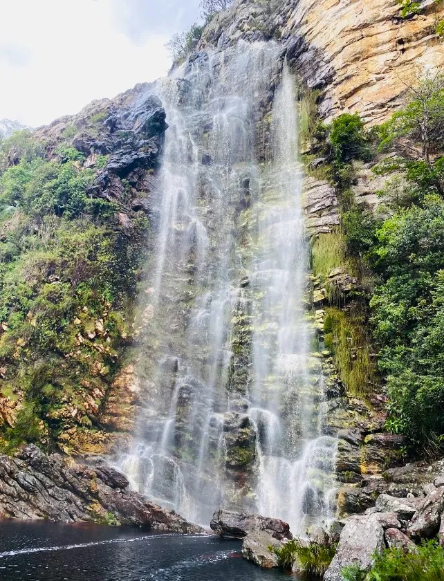

Grão Mogol: Um Santuário de Belezas Naturais
Rodeada por um cenário deslumbrante de serras, vales e rios, Grão Mogol é um convite irrecusável para os amantes da natureza e da aventura. O cerrado mineiro revela aqui sua exuberância em cachoeiras cristalinas e trilhas desafiadoras.



Pontos Turísticos Naturais Imperdíveis:
A região de Grão Mogol é pontilhada por atrativos que prometem experiências inesquecíveis:
- Cachoeira Véu das Noivas: Uma das mais famosas, com suas quedas d'água imponentes e piscinas naturais. Perfeita para um banho refrescante.
- Serra de Grão Mogol: Oferece vistas panorâmicas espetaculares, ideal para trilhas e contemplação do pôr do sol.
- Trilha do Barão: Uma rota que combina história e natureza, passando por antigos caminhos e paisagens intocadas.
- Flora do Cerrado: A diversidade de plantas e flores é um espetáculo à parte, especialmente na época de floração.
Prepare-se para explorar a natureza selvagem e preservada de Grão Mogol!